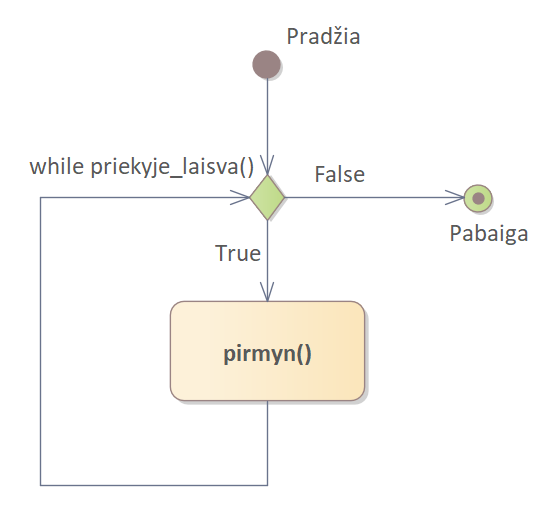
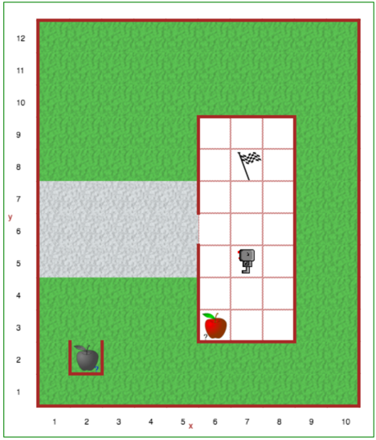

Kai norime pakartoti veiksmus, kol bus įvykdyta tam tikra sąlyga, Pitonas leidžia tai padaryti naudojant naują raktažodį: while. Tarkime, norime, kad Robotukas eitų tol, kol pasieks sieną. Anksčiau galėjome tai padaryti tokiu būdu:
def eik_iki_sienos():
if priekyje_laisva():
pirmyn()
repeat 42:
eik_iki_sienos()
Tuo pačiu, turėjome tikėtis, kad 42 žingsnių pakaks kelionei iki sienos. Naudojant while, galime šią programą sutrumpinti:
while priekyje_laisva():
pirmyn()
Tai ir viskas! Nereikia jokių mėginimų atspėti konkretų žingsnių skaičių. Šiuo atveju, Robotukas eis tol, kol pasieks sieną, net jei ji būtų už 1000 žingsnių.
Ši diagrama iliustruoja mūsų paprastą programą:
Atidaryk Robotuko pasaulio 12 lygį.
Vienas iš Robotuko namų ruošos darbų - išnešti atliekas. Kiekvieną kartą šiukšlių kibire susikaupia vis kitoks jų kiekis.
Sukurkite programą, pagal kurią Robotukas išneštų atliekas, o tada grįžtų į namus. Robotukas turi paimti tiek supuvusių obuolių, kiek jų yra kibire, nunešti juos į šiukšlių konteinerį lauke, tada grįžti į poziciją (7, 8). Sprendime turėsite naudoti while ciklus.
Tarkime, turime tokį kodą:
while sąlyga():
daryk_1()
daryk_2()
daryk_3()
Tai būtų tas pats, kas:
if sąlyga():
daryk_1()
daryk_2()
daryk_3()
if sąlyga():
daryk_1()
daryk_2()
daryk_3()
if sąlyga():
daryk_1()
daryk_2()
daryk_3()
if sąlyga():
daryk_1()
daryk_2()
daryk_3()
....
Matote, kad mes be reikalo atkartojame programoje tą patį kodo bloką. Tai yra blogai.
Vietoj to, kad programoje rašyti daugybę besikartojančio kodo, programuotojai naudoja taip vadinamus ciklus: tai reiškia, kad pradedama nuo pirmosios instrukcijos (daryk_1()) kodo bloko viduje, tęsiama su visomis kitomis, kol pasiekiama paskutinė instrukcija (daryk_3()), tada *ciklas užsisuka*, arba grįžtama atgal, prie sąlygos patikrinimo prieš pat bloko pradžią ir žiūrima, ar tenkinama sąlyga; jei taip (True), ciklas kartojamas dar kartą. Jei ne (False) - išeinama iš ciklo ir vykdomos toliau esančios operacijos. Programa turi būti parašyta taip, kad kažkuriuo momentu sąlyga nebūtų tenkinama, kitu atveju gausim *amžiną ciklą*, kuris nesustos tol kol bus nutraukta programa.